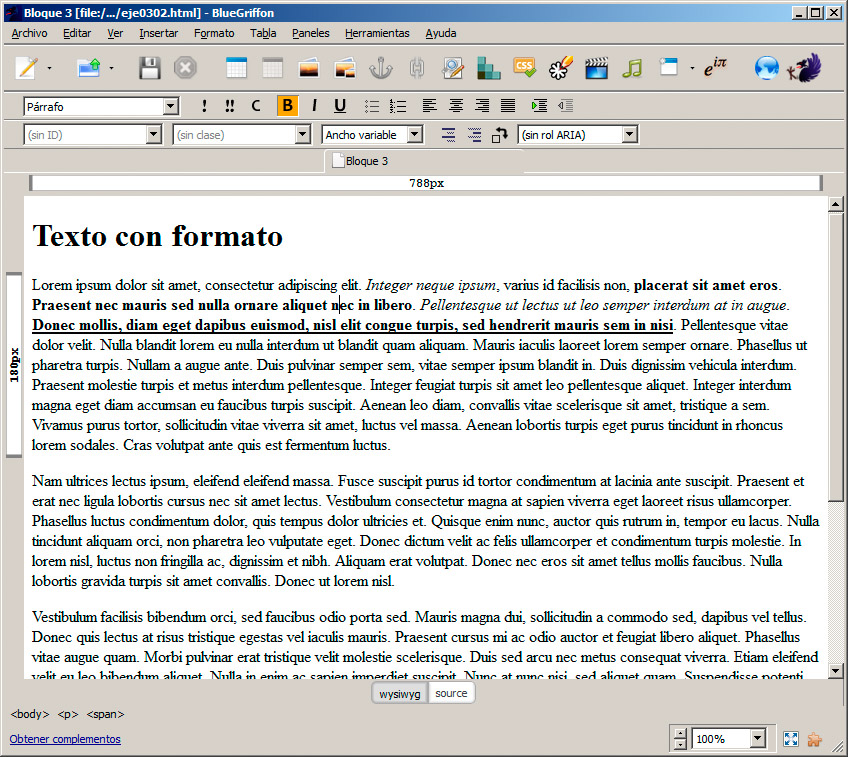
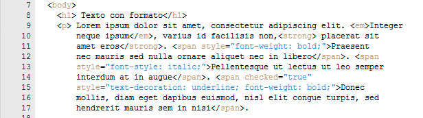
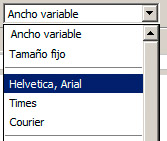
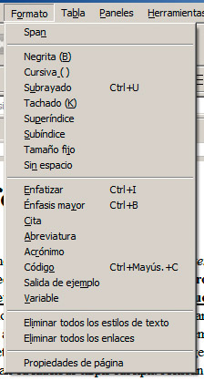
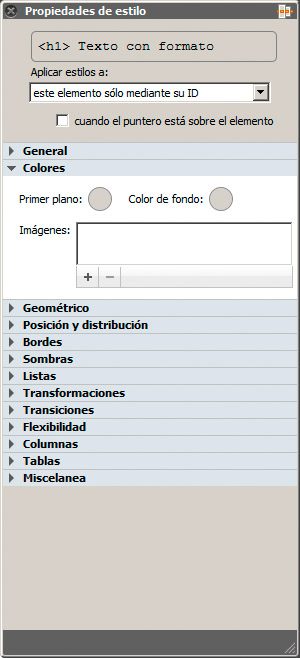
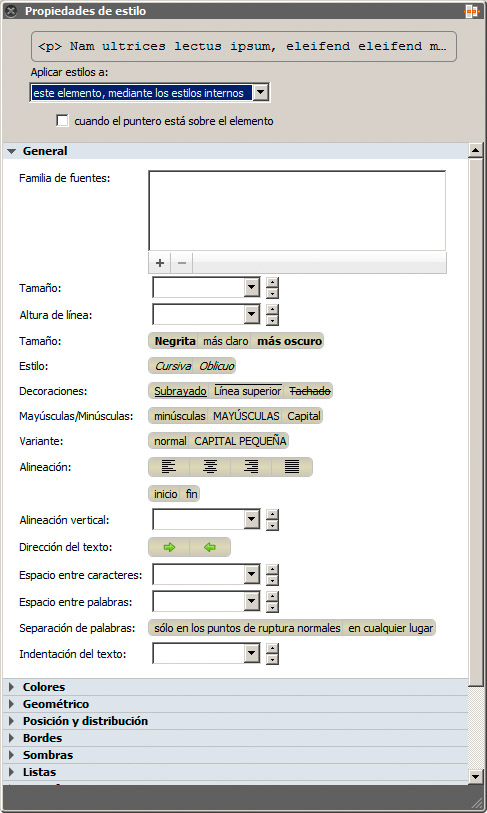
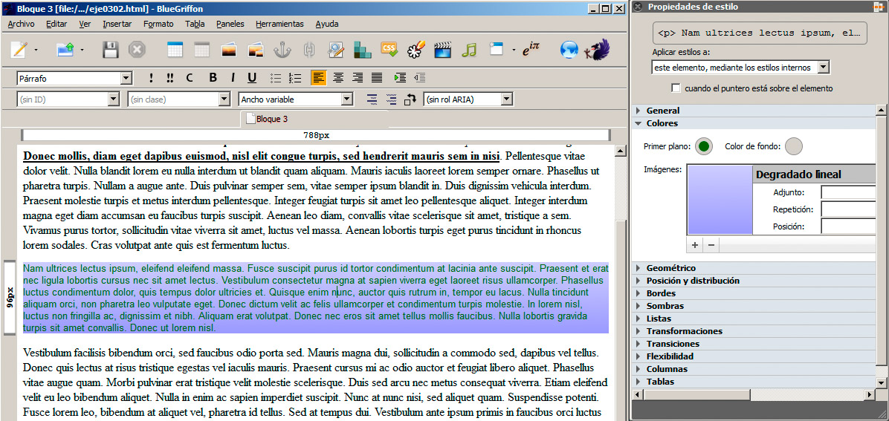
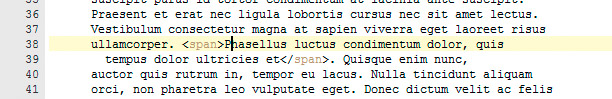
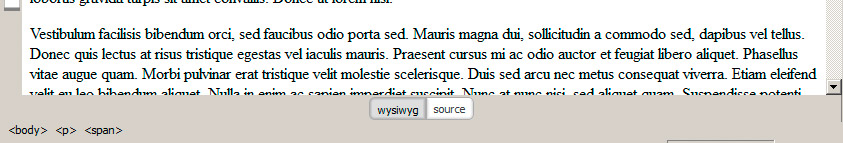

La lista de elementos CSS que podemos modificar es muy larga; la iremos analizando con calma. Por suerte también podemos emplear algún editor para realizar estas modificaciones. Veamos cómo se realiza con BlueGriffon.
Barras de herramientas
Debajo de la barra de botones de la aplicación encontramos dos barras dedicadas a la aplicación de estilos al contenido de la página web. Revisemos las opciones principales.

- Los botones representados por un signo de admiración simple, doble y una C, corresponden respectivamente a Énfasis, Énfasis mayor y Code y aplicarán al texto las etiquetas <em>, <strong> y <code>, que destacan el texto visualmente, pero también semánticamente.
- Los botones B, I y U se corresponden respectivamente con negrita, cursiva y subrayado. En estos casos el programa se encargará de aplicar el estilo necesario al elemento html o mediante una etiqueta span, en el caso de que no esté seleccionado un bloque completo. En la figura se muestra la aplicación de alguna de estas opciones.

- La alineación de los párrafos se controla mediante los cuatro botones que aparecen en esa barra, que se corresponden con Alineación izquierda, Centrado, Alineación derecha y Justificada. Estas opciones son aplicables a bloques de texto y provocarán un cambio en la posición en la que se ajusten las líneas. Por su parte, en el código fuente observaremos cómo se añade el estilo text-align, encargado de la alineación. En este ejemplo hemos centrado el título de un bloque de texto:
<h1 style="text-align: center;"> Texto con formato</h1>
- En la barra siguiente encontramos una lista desplegable que nos permite modificar la tipografía del texto, añadiendo el estilo font-family. Hay mucho que decir sobre el uso de tipografías, pero por el momento nos centraremos en intentar emplear sólo fuentes estándar, ya que si usamos una tipografía específica instalada en nuestro ordenador lo más probable es que nuestros usuario no cuenten con ella y no vean la página como la pensamos en un principio. Un buen comienzo es limitarnos a las primeras opciones de la lista de fuentes, que no especifican tipos exactos, sino más bien familias de fuentes:

Aún quedan algunos elementos en esas barras que revisaremos más adelante, pues no son opciones relacionadas con el formato inicial de la página.
Con las opciones vistas hasta ahora podemos aplicar un formato bastante apropiado a la página, aunque se echen cosas en falta. Veamos cómo seguir complementando el estilo.
Menú de formato
En el menú formato encontramos algunas opciones más relacionadas con la aplicación de estilos específicos al texto, tanto los más visuales, situados en la parte superior, como los que le aportan un sentido al contenido, en la mitad del menú.

El menú se completa con dos opciones orientadas a eliminar estilos en la página y a convertir enlaces en texto normal. La primera opción nos será útil si estamos copiando texto desde otro lugar y este mantiene estilos que queremos limpiar para aplicar los nuestros propios.
Propiedades de estilo
La aplicación de estilos con BlueGriffon se convierte en un proceso muy simple gracias al editor de estilos. Este panel se despliega haciendo clic en el botón Establecer estilos CSS o en el menú Paneles>Propiedades de estilo.

Desde este espacio podemos aplicar todos los estilos del estándar CSS sobre el contenido que tengamos seleccionado.
Antes de continuar debemos decidir a qué elemento HTML queremos aplicar el estilo. Para ello en la parte superior tenemos una lista denominada Aplicar estilos a. Nos proporciona dos vías diferentes
- Aplicar el estilo mediante una clase, un identificador (ID) o a todos los elementos de un mismo tipo, que se emplea para aplicar un mismo estilo a una agrupación de elementos. Por el momento no utilizaremos este sistema.
- Aplicar el estilo a un elemento, mediante los estilos internos. Esta es la opción con la que estamos trabajando y es la que debemos aplicar.
Pregunta de Elección Múltiple
|
Aplicarán al texto las etiquetas <em>, <strong> y <code>.
| |
|
Aplicarán al texto la etiqueta <text-align>.
| |
|
aplicarán al texto la etiqueta <p>.
|
Actividad 2
Realiza una modificación de toda la página web utilizando esta técnica de selección de la página. Prueba a cambiar el tipo de letra y el color de fondo de la página.
Nota
Veamos a continuación algunos de los valores que podemos modificar con este panel. Es imprescindible que tras modificar algunos valores accedamos al código fuente para ver qué etiquetas se han incorporado e ir conociendo así los diferentes operadores de estilos.
Bloque General
Este es quizás el bloque más importante al modificar la apariencia del texto. Las opciones recogidas en él son las habituales de cualquier editor de texto, por lo que no requieren demasiada explicación, podemos cambiar el tipo de letra, tamaño, destacar un texto, modificar la decoración, la alineación del párrafo, el interlineado, etc.
Bloque Colores
El bloque de colores se emplea para indicar el color del texto o del elemento en cuestión y su color de fondo. También se puede indicar una imagen o un degradado de color para que rellene el elemento seleccionado.

El siguiente ejemplo muestra un párrafo con su color modificado y con un degradado radial como color de fondo.

El uso de los degradados consiste en ir añadiendo colores mediante el signo +.
El vídeo siguiente aplica algunos estilos de los bloques General y Colores.
Otros bloques
El resto de los bloques también afectan a la visualización de los contenidos básicos, por lo que podemos inspeccionarlos para ver lo que contienen. No obstante los trataremos con más detalle al hablar sobre la maquetación de páginas web y al analizar detenidamente los estilos, por lo que no profundizaremos más sobre ellos ahora.
Con todas estas propiedades podremos lograr cualquier apariencia estética que se nos pase por la cabeza.
Selección de elementos HTML
Para aplicar un estilo con este método necesitaremos realizar previamente una selección del elemento HTML o de la parte de la página sobre la que queremos actuar. Si no hemos seleccionado los cambios se aplican al bloque en el que se encuentre el cursor, normalmente un párrafo o un título completo.
En este aspecto tenemos dos pequeños consejos que nos ayudarán en el trabajo con aplicaciones como BlueGriffon.
Cómo forzar una selección parcial
Al aplicar un estilo a una parte de un título o de un párrafo sólo debe cambiar la parte que tenemos seleccionada. Si esto no funciona o aún no queremos aplicar el estilo y sólo queremos definir una parte diferenciada mediante una etiqueta span, podemos hacerlo seleccionando la opción Formato>Span.
Si observamos la figura veremos cómo se ha incorporado la etiqueta, a pesar de que aún no tiene ningún formato específico.

Selector de elementos HTML
En la parte inferior del editor se encuentra una zona que nos muestra la etiqueta en la que se encuentra el cursor en cada momento. Como las etiquetas se anidan unas dentro de otras, normalmente veremos siempre una referencia al cuerpo de la página (<body>), luego al párrafo actual (<p>), etc.
La figura muestra el ejemplo anterior; como se puede ver, estamos dentro de la página, en un párrafo concreto y a su vez dentro de un span determinado.

Además de ubicarnos perfectamente en todo momento, esta línea nos sirve para seleccionar un elemento html concreto. Así, si quisiéramos, por ejemplo, modificar el estilo de toda la página sólo tendríamos que hacer clic en la etiqueta <body> y a continuación aplicar los estilos adecuados.
El siguiente vídeo arroja luz sobre este proceso.
Pregunta Verdadero-Falso
Verdadero Falso